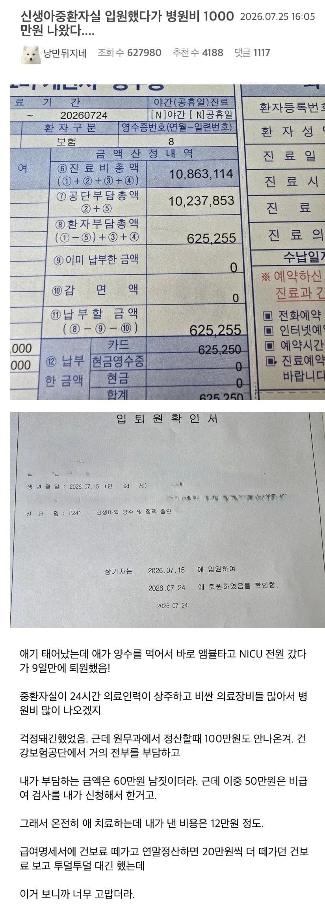

우리가 건강보험료를 내는 이유
댓글
건보료는 까면 안됨
건보료 슈킹해먹는 검머외를 까야지
까도된다ㅇㅇ 감기 이런걸로 돈 다빠지는거보면 급여항목 뜯어고쳐야함
가족이나 본인이 아파 보면 건강 보험료 내는거 하나도 아깝지 않음
산정특례 받아보면 이 나라 복지에 감사하게됨.
다 본인이 겪어봐야 아는거지 ㅋㅋ
건보료 월 100납부함니더..
혼자 가게해서 병원가고 싶어도 못갑니다..
외국인들이 부정수급 해가는거 보면 이빨 다 부셔버리고싶습니다..
외국인 건강보험 가입자가 3년 만에 28% 증가하며 168만명을 넘어섰다. 외국인 건강보험 재정은 최근 3년간 2조8천억원이 넘는 흑자를 기록한 것으로 나타났다
나름대로 잘 막아서 흑자래!
아니그럼 월2~3천이상씩 번다는거잖... 엄청나네.... 근데 궁금한 게 그렇게 버는데? 직원을 안 쓰고 혼자 일하는 겨?
월 얼마버는지 장부 작성안해서 몰라용
회계사무소에서 납부하라하면 납부하고
고지서 날라오면 그런갑다 하고 맙니다..
가끔 납품건만 아버지가 대신 납품해주시고 나머진 혼자 다합니다....
사업하면 뭐 정확한 금액을 알긴어렵긴하지만... 엄청나네..
그럼 부가세랑 종소세는 얼마 내는지 알 거니까 한번 말해 줄 수 있음?
아만자인데 고맙다.. 너 덕분에 산정특례 잘받고간다
이번에 담낭염 와서 5일 입원했는데 천만원 중에 나라에서 800내주더라. 진짜 건강보험료에 감사함…
건보가 지금 사회에서 건의됐으면 나올수 있었을까
손에 칼쥐고 대들면 죽인다는 사회아니면 나오기 힘들어보인다
건보는 사실 절실히 필요한 우리 나라 사람이 혜택보면 막 아깝다는 생각은 안들더라
근데 짱123깨새12끼들이 지금 건보료 타먹으니까 문제지
난 오히려 그래서 건강보험 보장을 줄여야한다고 봄
건보료 1년에 3 4백씩 30년 내면 1억내는데
보험이것저것 든거 생각하면 1억 못타먹을것 같거든
아파야 당첨인데
건보료는 내가 낸 만큼 타먹으려고 하는 게 아니라ㅠ 어쩔수읍슴...
이해는 하는데 사회적인 안정망을 아무 생각없이 줄인다음에 늘리는건 엄청힘든거라 되돌리기가 힘듬
그래서 신중해야함 만약에 이 정책이 잘못됬다고한다면
장기적으로는 되돌리기 힘든 자기자신 or 자기 자식의 목을 옥죄는길이 되는거라 신중해야할 필요가 있어
못타먹는게 좋은거 아닐까??
못타먹는게 훨 좋은거긴한데 아깝다는 생각이 들어서
혹시 뷔페가면 본전 따져가면서 먹는편이야?
걱정하지 마라, 살다보면 너나 가족이 분명 아플꺼다
와 단어선택이 미쳤네 ㅋㅋ 아파야 당첨이라니 나로써는 상상도 못 한 표현이다
원래 보험이 사고가 나야 당첨인거임
암한번걸려보면 생각바뀔꺼임
언젠가 꼭 당첨되서 본전 찾아
애 치료비는 100번 써도 인정!
항상 건보료 낼때마다 더럽게 많이 뜯어간단 생각이 드는데
그 건보료 덕분에 누군가 싸게 치료했다는 글 보면 기분이 괜찮아짐 ㅋㅋㅋㅋ
감기같은 경증 환자는 보험 적용 안되게해야
우리 애기도 NICU 며칠 있었는데 중간정산 하니까 천만원 넘던거 퇴원날 결제하니까 18만원인가만 본인부담금 나옴
나나 남편이나 태어나서 크게 아파본 적이 없어서 건보료 좀 아까웠는데 내 딸이 예정일보다 한달빠르게 태어나서 니큐로 들어감.. 2~3주잇가 퇴원했는데 계산서보고 이제 건보료 돈 하나도 안아깝다고 건강보험은 신이라고 남편이랑 이야기했었음
건보다니면서 욕 처먹을일만 있었는데 뿌듯하구만
건보료가 일종이 품앗이지
한국이 너무 좋다.
술담배과식 다 쳐하면서 병원가는븅신들이 많아서 너무 아까움
회사 대표도 둘째 태어나자마자 꼬추가 뭐 어케 된 상태라 응급수술했었는데 수술비 천단위 찍힌거 실부담금 30냈다더라
건보나 국민연금은 이제 사실상 세금이지 뭐 근데 적자가 심해져서 얼마나갈지는 ㅋㅋ
배당 잘못 셋팅해서 월 33만원씩 추가로 냄 ㅜㅜ
애기는 급여항목인 경우 5%만 냄..